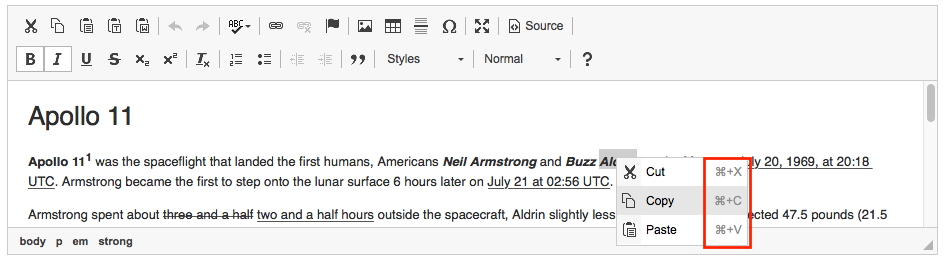
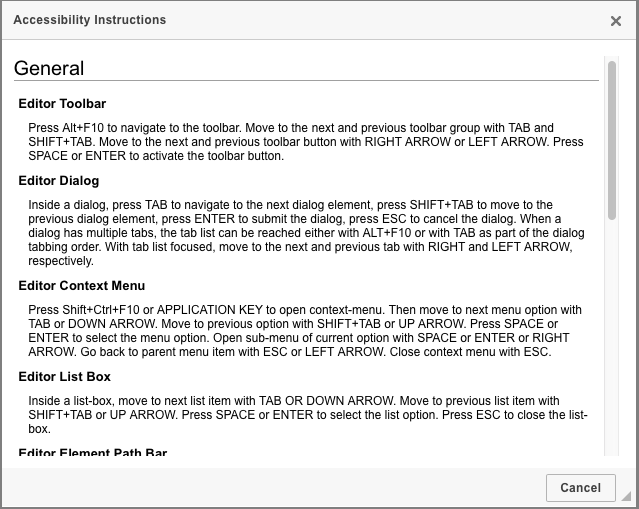
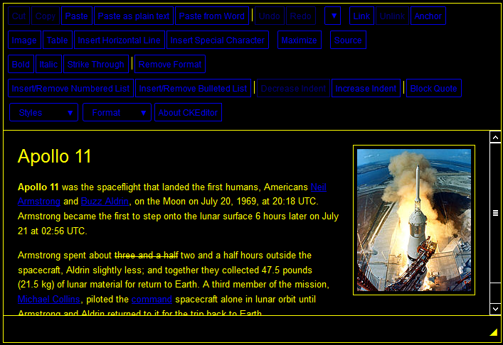

Accessibility Support in CKEditor
Accessibility Support in CKEditor
Accessibility support is a priority issue in CKEditor. CKEditor complies with most important industry standards, recommendations and checklists, including:
- Section 508 Amendment to the Rehabilitation Act of 1973
- Web Content Accessibility Guidelines (WCAG 2.0)
- IBM Web Accessibility Checklist
- WAI-ARIA
It also includes a number of features that make it easy to use with assistive technologies, such as intuitive keyboard navigation or WAI-ARIA based user interface. Scroll to the Accessibility Features Overview section for a short summary.
# Background
Accessibility support in CKEditor goes back to early CKEditor 3.x releases; its most important foundation was work done in strict cooperation with IBM accessibility experts already in 2010, for CKEditor 3.2. Our unique approach has always focused on providing accessible solutions that not only satisfy the requirements defined in the standards but also are usable in practical terms. We also strive to evoke accessibility-friendly approach in our customers by stressing out that good accessibility support increases business opportunities and has lots of commercial benefits.
# Supported Platforms
In our accessibility testing we use the latest Firefox version with latest JAWS version as our reference environment and officially supported platform. This is because we have found this combination to be most reliable and standards-compliant.
This does not mean, however, that CKEditor has any major issues with other modern, standards-compliant browsers (including latest Internet Explorer versions) and alternative screen reader solutions like VoiceOver, NonVisual Desktop Access (NVDA) or ChromeVox. On the contrary: we assume that since we test in the most standards-compliant solution, other standards-compliant environments should also work correctly.
In any case, if you encounter any accessibility-related issue while using CKEditor, please let us know by creating an issue on our GitHub issues page. We treat all accessibility issues with utmost attention and will be happy to solve them and further improve CKEditor compliance with accessibility standards.
# Assisting Users with Special Needs
CKEditor compliance with numerous accessibility standards means that it can cater to the needs of users with disabilities.
The following features will make it possible for people with special needs to use CKEditor:
# Visual Impairment
- WAI-ARIA based UI with screen reader support.
- Full keyboard support for all editor features.
- High contrast rendering.
- All information conveyed with color is also available without color (e.g. through textual labels).
# Mobility Impairment
- Full keyboard support for all editor features.
# Accessibility Features Overview
The following section describes some of the most important accessibility-related features that are available in CKEditor. You can try them out on the working “Accessibility Support and Keyboard Shortcuts” sample or any other applicable demos listed below.
# Keyboard Access
The following features make working with CKEditor through standard keyboard easy.
# Reaching the Editor on the Page
CKEditor takes part in the Tab order of a web page that it is embedded in. It can be reached and exited by using the Tab and Shift+Tab keyboard shortcuts that are commonly used for navigating between page elements. Read more here and see the working demo here.
# Keyboard Navigation
Once the editor is in focus (i.e. it is an active element for the user), its entire interface can be used through the keyboard. To do so, some basic key combinations can be employed. For example:
- Alt+F10 – Moves the focus to the toolbar. Enter (or Space) selects an option, Esc returns to the editing area.
- Alt+F11 – Moves the focus to the elements path. Enter and Esc can be used here as well.
- Tab, Shift+Tab and Arrow keys – Move through toolbar groups and buttons as well as context menu options and dialog window elements.
There are plenty other keyboard shortcuts that can be utilized. For most editor functions we have chosen the key combinations that the user will naturally use. Everything else is clarified in the documentation as well as the Accessibility Instructions dialog window (Alt+0).
Additionally, for CKEditor 4.6 and later, all keyboard shortcuts available for a particular action or command are displayed directly in the editor, in toolbar button tooltips or context menu entries.

You can also try out the working demo. The editor usage through the keyboard is most intuitive and as straightforward as possible.
# Assistive Technology Support
The following features support using CKEditor with assistive technologies such as screen readers.
# Announcing the Editor on the Page
When the user reaches an editor instance, the screen reader announces it with the following text:
Rich text editor, editor1, press Alt+0 for help.
The editor1 part of the text is simply the name that has been assigned to the editor instance by the developer. This is even more useful when you have more than one editor instance on the same page. The website creator should make sure that editor instance names are meaningful, though, to make it really useful for the users.
# WAI-ARIA Support in Editor Interface
The entire CKEditor user interface is ARIA-supported. As explained on Mozilla Developer Network:
WAI-ARIA, the Accessible Rich Internet Applications specification from the W3C's Web Accessibility Initiative, provides a way to add the missing semantics needed by assistive technologies such as screen readers. ARIA enables developers to describe their widgets in more detail by adding special attributes to the markup. Designed to fill the gap between standard HTML tags and the desktop-style controls found in dynamic web applications, ARIA provides roles and states that describe the behaviour of most familiar UI widgets.
In CKEditor this includes the toolbar and bottom bar, panels and drop-down lists, context menus and dialog windows. Thanks to this feature the editor can be used with screen readers and other assistive technologies.
# Accessibility Instructions Dialog Window
Instead of bothering the user and forcing to hear lots of instructions every time an editor instance is reached, in CKEditor we simply remind the keyboard shortcut required to get help. When a user presses the Alt+0 keyboard shortcut, the Accessibility Instructions dialog window is opened. It contains some detailed information about the accessibility features of CKEditor, including all keyboard shortcuts needed to navigate the editor and use its features.

Thanks to this feature users do not need to be trained or pointed to documentation to understand how to use the editor, as the help is there whenever they need it.
# Visual Aids
The following features make working with CKEditor easier for people with visual impairment.
# High Contrast Mode
One less commonly considered accessibility feature is the compatibility with the operating system High Contrast Mode. As the name suggests, this is an operating system feature. In Windows it can be enabled through the accessibility options available in the Control Panel. It can also be turned on by using the Alt+Left Shift+PrntScr keyboard shortcut.
In High Contrast Mode all images and colors are discarded. A predominant color pair is then used to display the entire operating system interface (usually white or yellow on black, or vice versa).
The image below shows a standard CKEditor instance loaded in Windows 8 High Contrast Mode in Firefox.

Note that not all browsers support High Contrast Mode. Some of them may simply show web pages in full color despite the operating system settings.
# Textual Labels for Color Information
Color blind users may have trouble accessing information that is conveyed with color. In CKEditor all information conveyed with color (including the color selector) is also available without color (e.g. through textual labels).
# Creating Accessible Content
The following features can be used by developers to ensure that content created with CKEditor is accessible.
# Accessibility Checker
The innovative Accessibility Checker tool lets you inspect the accessibility level of content created in the editor and fix reported issues, often fully automatically. It is a must-have addon for government institutions and companies that are often required by law to ensure the content they produce meets accessibility standards. See the working demo and get the plugin here.
# Setting Language of Parts for Editor Content
The optional Language plugin, introduced in CKEditor 4.3, implements the WCAG 3.1.2 Language of Parts specification. It lets you assign one of the pre-configured languages to a text selection. See the working demo and get the plugin here.
# Accessibility Features Demos
See the following working samples to check some accessibility-related features of CKEditor:
- The “Accessibility Support and Keyboard Shortcuts” sample showcases such features as the Accessibility Help dialog or the usage of keyboard shortcuts.
- The “Accessibility Checker” sample shows how to detect and fix accessibility issues in your editor content.
# Related Features
Refer to the following resources for more information about accessibility in CKEditor:
- The Managing Content Accessibility with Accessibility Checker article describes an innovative Accessibility Checker tool that lets you inspect the accessibility level of content created in CKEditor and immediately solve any issues that are found.
- The Keyboard Shortcuts article lists all keyboard shortcuts supported in CKEditor.
- The Page Navigation Using the “Tab” Key article discusses how CKEditor participates in the page Tab order.
- The CKEditor Section 508 Compliance article describes CKEditor 4 compatibility with Section 508 Amendment to the Rehabilitation Act of 1973.
- The CKEditor WCAG 2.0 Compliance article describes CKEditor 4 compatibility with the Web Content Accessibility Guidelines (WCAG) 2.0 standard.